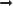

This chapter contains 30 lessons. Each lesson presents a set of key TOEFL words. Following the entries, there are 10 matching exercises. At the end of each lesson, there are 10 TOEFL-like vocabulary questions that contain most of the words presented in each lesson. All of these TOEFL-like questions provide an excellent vocabulary review as well as solid preparation for not only the reading section of the TOEFL, but also for all sections of the TOEFL.
You should study the lessons in order. For example, after studying lesson 1, go directly to lesson 2. Do not study lessons out of order. The book is designed to provide systematic review of words in previous lessons. By studying the lessons out of order, you will be defeating the review system.
Let’s examine a sample entry to see the kinds of information you will learn.
intricate | |
adv. | intricately |
n. | intricate |
adj. | having many parts; finely detailed |
syn. | complex |
The intricate design of the vase made it a valuable piece for her collection.
I cannot begin to understand all of the intricacies of modern automobile motors.
The entry features the word intricate. Directly under the word, you will find other forms of the same word. These words have the same general meaning; they represent the different parts of speech of the word. For each of the forms, the part of speech is given. The following abbreviations for parts of speech are used in the word entries:
adj. |
 |
adjective |
adv. |
adverb |
|
conj. |
conjunction |
|
v. |
verb |
|
n. |
noun |
|
ph. v. |
phrasal verb |
|
prep. ph. |
prepositional phrase |
In the case of intricate, the adjective form, adj., is presented as the key word. Other forms of the entry, intricately, and intricacy are listed below the main entry.
The key word is then defined in clear, easy to understand English. In this example, we see that intricate means something having many parts or something that is finely detailed.
Under the definition you will find a synonym for the key word. The synonym is a word that has the same or a similar meaning and it is marked with the letters syn. In the example on the previous page, the synonym given for intricate is complex.
Below the synonym, there are two sentences that show the usage of two different forms of the word. The sentences are rich in context; that is, the words surrounding the key word tend to support and clarify the meaning of the key word. Let’s look at the two sentences in the example.
The intricate design of the vase made it a valuable piece for her collection.
I cannot begin to understand all of the intricacies of modern automobile motors.
The key word will usually appear in the first sentence. The key word sentence is followed by a second sentence illustrating the use of one of the related words, but with a different form of the word. If no related words are given, then the second sentence serves as another illustration of the meaning of the key word.
Some word forms are not included in the entries. These are words that are not in common usage and not likely to appear on the TOEFL.
The word entries provide you with all the information that you need to build a powerful TOEFL vocabulary.
To learn vocabulary efficiently, you must have a study plan and follow it carefully. The following plan has been useful to many students who are building their TOEFL vocabulary.
Plan to spend at least an hour studying the words in each lesson of this book. Do not study words that you already know.
Read
First, read the 15 entries of the lesson carefully, including the definition, different forms, synonym, and example sentences. It is important for you to associate the key word with its meaning and synonym. These are the three most important parts of the word entry.
Reread
Next, read each word entry again. Look up unfamiliar words that appear in the example sentences. This time when you study the entry we suggest that you cover the key word, then look at the meaning and its synonym. Then identify the key word. When you are able to identify the key word, reverse the process by identifying the covered synonym. Finally, cover everything in the entry, except the meaning, and identify the key word and its synonym.
Find the Synonyms
You are now ready for the matching exercise at the end of the word list. Let’s look at a typical matching question.
1. intricate
(A) functional
(B) complex
(C) predominant
(D) inordinate
The purpose of the question is to test your knowledge of synonyms, a key skill for the TOEFL. You will see four choices. In this example, you must choose the synonym for the word intricate. The correct answer is (B), complex. Nearly all the words that appear as answer choices are key words introduced in the same and previous lessons. Check your answers by referring to the Answer Key found at the back of this book.
You are now ready to test your skill on actual TOEFL-like questions. Let’s look at the following test question.
The intricate design of the building’s facade is typical of buildings of the nineteenth century.
(A) functional
(B) accurate
(C) standard
(D) complex
This test question is typical of the questions on the vocabulary section of the TOEFL. You must choose the word that has the same or similar meaning as the underlined word in the sentence. Most TOEFL questions do not use the word in context-rich sentences. Therefore, as we learned in Chapter 2, you will probably not be able to determine the meaning of the word by reading the sentence. Therefore, look directly to the underlined word and do not read the sentence. Look for its synonym among the four choices. The correct answer is (D), complex. Most of the answer choices for the test questions at the end of each lesson are key words introduced in that lesson.
After you have studied the 15 words and their synonyms, and completed the practice exercises, make flash cards. On one side of the card, write the key word and its related forms. On the other side of the card, write its synonym. Review these cards several times during the weeks before your TOEFL test session. If you are preparing for a specific TOEFL test date, make a study schedule based on how much time you have before the TOEFL. For example, if you have six weeks before your test date, plan to study five lessons each week
Be sure that you organize your cards. It is suggested that you organize your cards in alphabetical order by synonyms or by the lesson number. Keep two groups of cards; one group for the words you have learned, the second group for those words you need to learn. Review the second group more often than the first group of words that you already know.
As your vocabulary grows, return to the exercises and test questions in each lesson.
By following this study plan you will be better prepared for the important day when you hear the words “You may now open your TOEFL test booklet.”
One phrase-type question is provided in each of this book’s 30 lessons. Each question contains a short passage that illustrates the use of a vocabulary item in combination with other words that it is often grouped with. For example, densely is a word that appears as a single item in one of these lessons, but it is often combined with the word populated to form the phrase densely populated. Therefore, densely populated is treated as a whole phrase in one of the phrasal questions in the book. It is always useful to learn the meanings of single words, but it is also important to learn how these words combine with other words in common word pairs or word groups.
In answering these questions, it is helpful to use what you already know about the words in isolation and to keep a few simple strategies in mind. Let’s look more closely at the densely populated example.
First, you should read the passage carefully. A lot of what you need to know about the word in combination and the meaning of the whole phrase is already available in the passage itself. In this case, you know that the phrase has something to do with the distribution of people in a particular country: Some live close together in cities, while others live far apart in the countryside. Therefore, you have a sense of what the words mean in combination because you understand the general meaning of the passage that illustrates and defines them.
Understanding the general meaning and the phrase’s context is probably enough for you to come up with the right answer to the practice question in this book:
In stating that the Netherlands is densely populated, the author means that its
(A) people are very unevenly distributed.
(B) population is the largest in Europe.
(C) population is the largest per square kilometer.
(D) cities are the largest cities in Europe.
Without going much further, you can probably guess that the best answer here is (C) since it comes the closest to saying that the country as a whole contains a lot of people without saying that it contains more than any other country in Europe. However, there are other steps you can take just to be sure.
You can also take a look at the entry for the target word, in this case densely. Notice that the word is an adverb. This means that it limits or modifies an adjective and a verb; in this instance, it tells you how heavily populated a particular European country is—how many people it contains per square kilometer. Other word combinations or phrases fall into other categories. For example, some contain verbs followed by prepositions (conforms to), some contain nouns preceded by prepositions (on impulse), and some contain nouns preceded by adjectives (crushing blow). In other words, try to use as much information about a word’s form or part of speech as you can in arriving at its meaning, and specifically at an understanding of its relationship with the other words around it.
Finally, recall any other instance of the phrase you have heard or seen. For example, you may discover that you have already encountered the phrase in your reading—in developing your awareness of vocabulary through extensive reading—and you may have recorded it on one of your flash cards. These phrases have been chosen because they are commonly used in the language. For that reason, you are likely to come across them in a variety of contexts. Their frequent use is also the reason why understanding these words in combination can give you a deeper and more general understanding of the language as a whole.
Word Combinations in This Book
The table beginning below includes the word combinations and phrases highlighted in the book’s 30 vocabulary lessons.
In the first column on the left, you can see grammatical information about each word combination’s part of speech. For example, disapprove of is described as a verb because it fills that role in an English sentence:
Sheila disapproves of students who make a lot of noise.
In the second column, the chapter in which each word combination is found is specified. Finally, an illustrative sentence is given in the third column.
The table will help you learn new phrases and word combinations, as well as general strategies for learning new words in combination wherever you find them.
Word Combinations in This Book
(See the second column for lesson number)
VERBS |
Example |
|
disapprove of |
1 |
Many communities now disapprove of cell or car phone use. |
(see an) advantage in |
2 |
Many people can see an advantage in moving to big cities. |
conform to |
3 |
A chameleon changes color to conform to its surroundings. |
(be) determined to |
4 |
Many residents are determined to restrict the movement of deer. |
(be) reported to |
12 |
They were reported to have powers that protected them from attack. |
come across |
18 |
John came across some old coins while cleaning out the basement. |
take the initiative |
20 |
The center forward takes the initiative and moves the ball forward. |
react to |
21 |
The colorant reacts to the presence of acid by turning red. |
account for |
22 |
Scientists seek to account for patterned circles in grain fields. |
bring about |
22 |
Advances in technology have brought about a digital age. |
(be) renowned for |
23 |
The orchestra is especially renowned for its violin players. |
(be) peculiar to |
24 |
Water storage is peculiar to a class of animals called ruminants. |
stem from |
24 |
His good grades stem from his dedication to studying. |
(be) open to interpretation |
26 |
Historical facts about the pyramids are open to interpretation. |
factor in |
26 |
She had to factor in the cost of shipping when shopping online. |
take on |
28 |
A student can take on the challenge of learning a new language. |
ADJECTIVES + NOUNS |
||
intriguing question |
5 |
Where human life first arose is still an intriguing question. |
crushing blow |
8 |
The airplane’s invention was a crushing blow for ballooning. |
face-to-face encounters |
13 |
Lack of eye contact is a sign of disrespect in face-to-face encounters. |
heightened awareness |
16 |
Heightened awareness has led to worry about greenhouse gases. |
gradual decrease |
17 |
A gradual decrease will not stimulate spending or employment. |
balanced view |
18 |
TV news rarely gives a balanced view of people, products, and events. |
curative powers |
28 |
A substance with curative powers would actually kill bacteria. |
ADVERBS + ADJECTIVES |
||
well-suited |
5 |
The manager is well-suited for the job. |
comparatively easy |
6 |
It is comparatively easy to switch off some Internet sites. |
densely populated |
9 |
The Netherlands is the most densely populated country in Europe. |
exceptionally talented |
10 |
Relatively few children are exceptionally talented musically. |
fundamentally sound |
14 |
NASA is confident that spacecrafts are fundamentally sound. |
perilously close |
15 |
The world came perilously close to losing the panda in the 1980s. |
aptly named |
27 |
The ship was aptly named after the Titans, who ruled the universe. |
prominently displayed |
29 |
The electronic bar code is not prominently displayed on a product. |
severely punished |
30 |
In some countries, high-speed driving is severely punished. |
PREPOSITIONS + NOUNS |
||
to its core |
7 |
Patients view the medical profession as selfish to its core. |
on impulse |
25 |
Psychology has explored why purchases are made on impulse. |
COMPARATIVE ADJECTIVE |
||
more prevalent than |
11 |
Sports utility vehicles are more prevalent than compact cars. |
PHRASAL PREPOSITION |
||
in conjunction with |
5 |
Good road design in conjunction with effective driver education makes roads safer. |
in opposition to |
19 |
There is growing sentiment in opposition to sea bass fishing. |